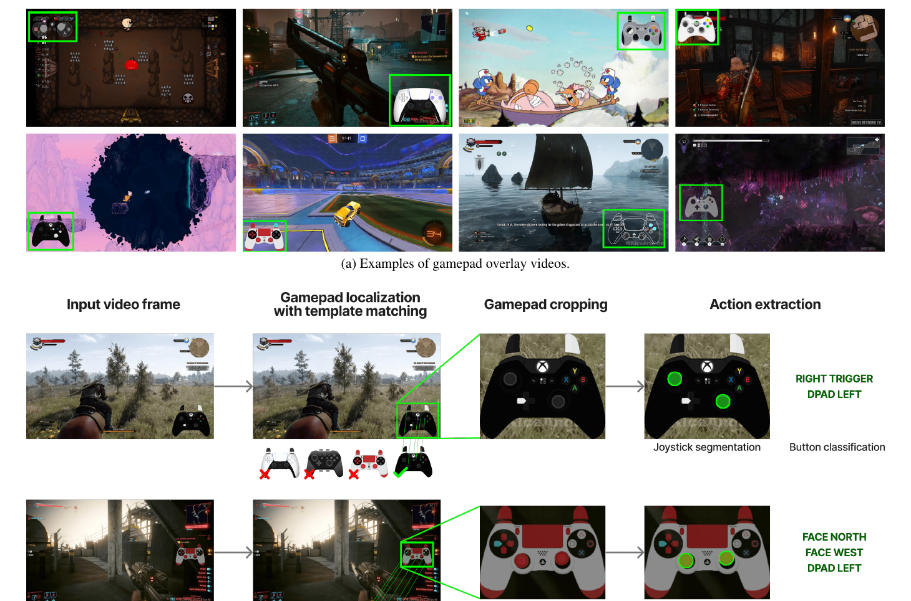
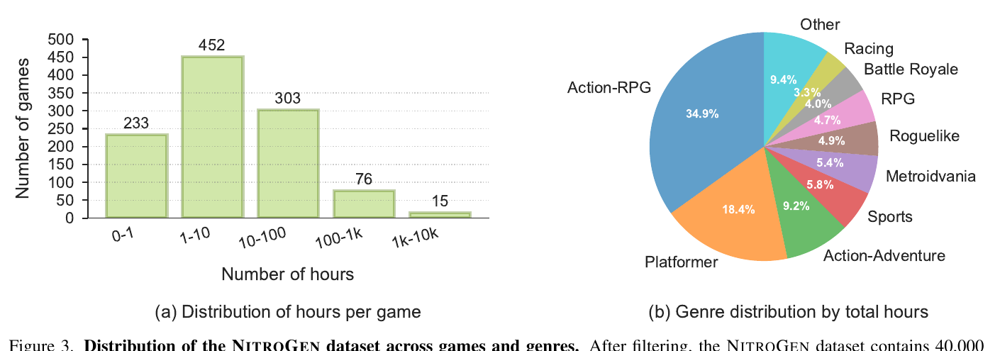
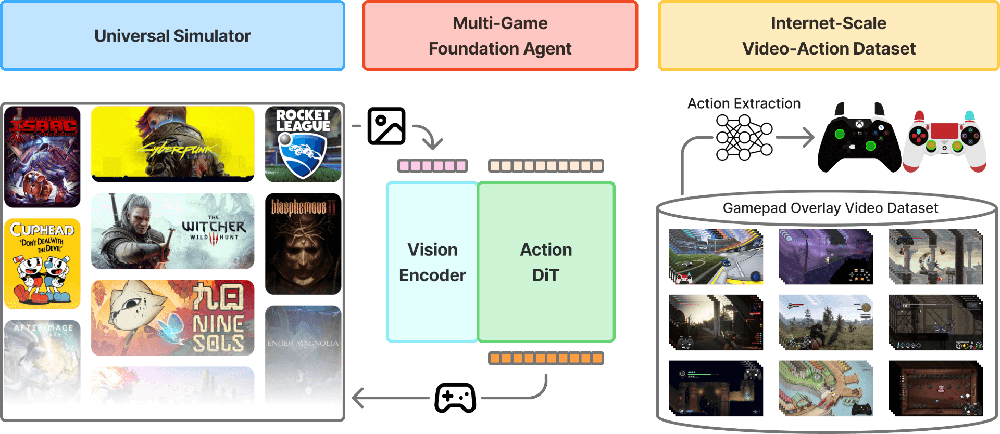
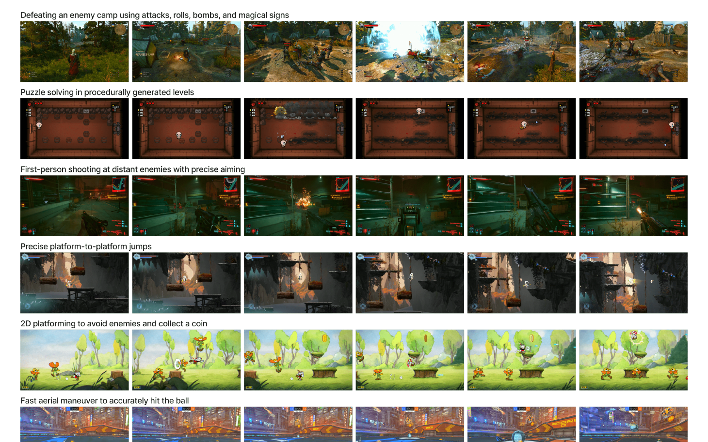
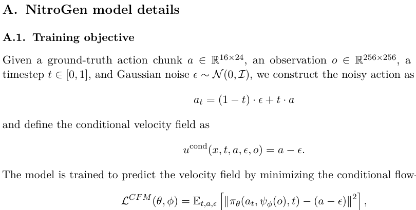
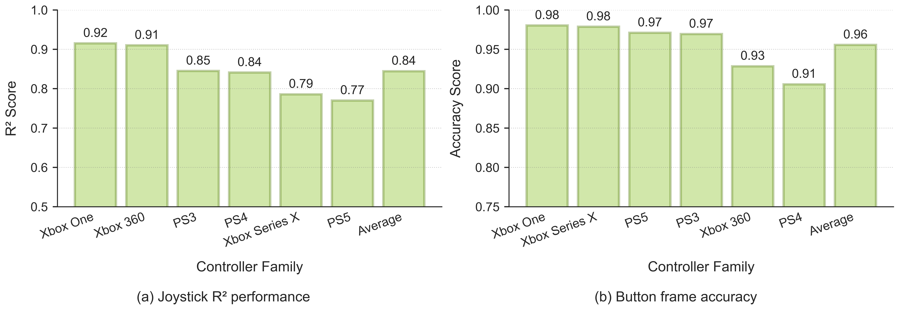
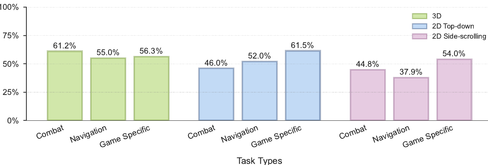
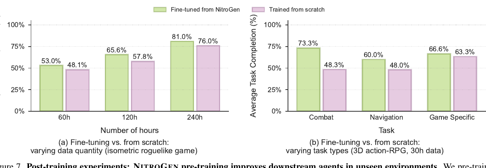
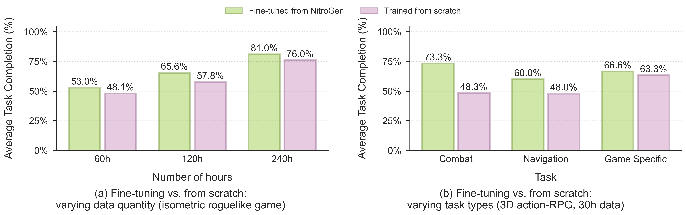

NitroGen 深读：互联网游戏视频怎样变成通用具身智能的行动数据？
导读。NitroGen 真正要回答的问题不是“模型能不能玩游戏”，而是：如果具身智能也想复用视觉/语言模型的 scaling 经验，能否从互联网视频里自动恢复足够多、足够准的 action labels？论文给出的回答是一个三件套：从公开 gameplay videos 中抽取动作标签，构造可跨商业游戏评测的 universal harness，再用统一 vision-action policy 做大规模行为克隆。核心结论要谨慎读：它证明了大规模 noisy internet data 可以训练出可迁移的 fast-reacting policy，但还不是一个能长期规划、听语言指令、端到端通关的游戏智能体。
核心问题。LLM 和视觉模型的 scaling 依赖海量可监督数据；机器人和游戏 agent 的动作数据却昂贵、稀缺、接口不统一。NitroGen 把“玩家把手柄操作叠在直播/录像画面上”这一互联网副产物转化为 supervision source。
一句话贡献。它把 video-action dataset、benchmark harness 和 500M 级 vision-action policy 放在同一个闭环里检验：数据能不能支撑预训练，预训练能不能提升 unseen games 的下游微调。

1. 先问核心问题：具身智能为什么缺“互联网规模”的行动数据？
视觉和语言模型可以从网页、图像和文本中获得大规模监督信号，但具身 agent 的核心监督是“在某个 observation 下采取什么 action”。传统路线要么依赖专门模拟器和手工奖励，要么依赖人工 demonstration，二者都难以跨上千个环境扩展。NitroGen 观察到一个常被忽略的数据源：很多 gameplay 视频自带 gamepad overlay，画面角落实时显示玩家按键和摇杆位置。
问：为什么这比“直接从视频学动作”更关键？
引导：视频里有画面，但没有 action label；没有 action，behavior cloning 就退化成模仿视觉结果，而不是学会控制。
答：overlay 把动作从不可见变量变成可识别图像区域。NitroGen 的关键不是发明一个新游戏 simulator，而是把公开视频变成 frame-level observation-action pairs，从而绕过手工采集 action logs 的瓶颈。
2. 整体贡献：作者明确提出了什么，新意在哪里？
论文把贡献明确拆成三部分：action-labeled internet-scale dataset、multi-game evaluation suite、以及大规模 behavior-cloning 预训练模型。读者能进一步推断的是：具身智能的 scaling 可能不必只等真实机器人数据，也可以先在可交互、规则多样、动作密集的视频游戏世界中验证。
| 模块 | 作者明确提出 | 论文证据 | 不要过度外推 |
|---|---|---|---|
| Video-action dataset | 从公开 gameplay videos 中自动抽取 player actions，形成 40,000 小时、超过 1,000 个游戏的数据。 | Fig. 2 展示 action extraction pipeline；Fig. 3 给出小时数与类型分布。 | 这不是无噪声 ground-truth log；overlay 延迟、解析误差和手柄映射差异仍存在。 |
| Universal harness | 用 Gymnasium API 包装商业游戏，统一 observation/action interface。 | Fig. 1 左侧与正文 2.2 节说明 frame-by-frame control。 | 论文把 real-time / asynchronous deployment 留给未来工作。 |
| Vision-action policy | 训练 500M 级模型，从 256×256 RGB frame 预测 16-step gamepad action chunk。 | Fig. 5/7 展示预训练和下游微调收益。 | 它是 system-1 fast-reacting sensory model，不是长期规划 agent。 |
3. 数据集与任务：模型到底看到了什么？
NitroGen 的数据构建从 71,000 小时 raw videos 开始，经过动作密度过滤后保留 40,000 小时；数据覆盖超过 1,000 个游戏，包含 38,739 个视频，来自 818 个创作者，平均视频长度约 1 小时 50 分。它的输入输出形式是：单帧 RGB observation → 标准化 gamepad action chunk。论文还构建了 10 个商业游戏、30 个任务的 evaluation suite，用来测试跨游戏迁移。

| 阶段 | 输入 | 处理 | 输出 | 作用 |
|---|---|---|---|---|
| Raw collection | 公开 gameplay videos with gamepad overlays | 论文说明收集 71,000 小时 raw video；具体平台检索细节论文未说明 | 带 controller overlay 的候选视频 | 把互联网视频变成可挖掘数据源 |
| Template matching | 视频帧 + 约 300 个 controller templates | 每个视频采样 25 帧，用 SIFT/XFeat 匹配，要求至少 20 个 inliers | controller 区域 crop | 定位动作标签所在区域 |
| Action parsing | 连续两帧 controller crop | SegFormer 预测 11×11 joystick segmentation grid 与 binary button states | frame-level actions | 把视觉 overlay 变成行为克隆标签 |
| Quality filtering | action sequences | 保留至少 50% timesteps 有非零 action 的 chunks；保留 55% 数据 | 40,000 小时 filtered dataset | 降低 null-action 过预测风险 |

问：数据质量真的够支撑训练吗？
答：论文用 action parsing quality 和 downstream policy results 两层证据支撑。动作解析在合成 OBS benchmark 上平均 joystick $R^2=0.84$、button accuracy $=0.96$；但这仍是代理评估，不等于所有真实视频都有同等精度。
4. Pipeline 拆解：从公开视频到可微调 agent
完整 pipeline 可以分成三条流：数据流、模型流和评测流。数据流负责从 overlay videos 生产 actions；模型流用 SigLIP 2 encoder + Action DiT 学习 action chunks；评测流用 universal harness 把商业游戏变成 Gymnasium-like 环境。三条流互相约束：如果数据流不可靠，模型会学到错误动作；如果评测流不统一，就无法比较跨游戏 transfer。


继续追问：如果去掉 universal harness，会怎样？
引导：只训练模型还不够，具身智能必须闭环交互。
答：没有统一 harness，结果会停留在 offline action prediction，无法评价 action 在真实游戏状态中是否完成任务。NitroGen 的实验主张依赖 task completion rate，而不是只依赖 action-label accuracy。
5. 模型与方法：为什么是 action chunk + flow matching？
NitroGen 的 policy 采用 256×256 单帧 RGB 输入，使用 SigLIP 2 vision transformer 编码成 frame tokens；Action DiT 接收带噪 action chunk，并通过 cross-attention 条件化在视觉 tokens 上，输出连续 action 向量。论文报告多帧 conditioning 没有带来收益，因此最终使用单帧上下文并生成 16-step action chunks，以提升 temporal consistency。
先问为什么要“生成”动作，而不是“回归”动作。给定同一帧画面，往往有多个都合理的动作（动作分布是多模态的）。若用一步 MSE 回归训练确定性策略，最优解是条件均值 $\mathbb{E}[a\mid o]$——而几个合法动作的平均通常本身不合法（“向左”和“向右”平均成“原地/乱动”，连续控制里两条合法轨迹的均值也可能落到流形之外）。这就是回归到均值、mode averaging 的老问题，也是 MSE 图像回归会发糊的同一个原因（苏剑林对该现象有过讨论 [archives/7574]）。
公式读法
这些公式把动作生成从“一步回归”变成“在 action space 中从噪声移动到可执行动作”。这对游戏控制有两个直觉优势：一是 action chunk 能表达短期连续控制，二是 flow matching 的采样过程可以在固定 $k=16$ 步内输出动作序列。去掉 chunk 可能会损害 temporal consistency；去掉视觉条件则模型无法根据当前画面选择动作。
为什么 flow matching 正好治这个病
flow matching 不预测一个点，而是学一个把噪声样本搬到条件分布 $p(a\mid o)$ 的速度场（flow/扩散的传输视角见 [archives/9119]）。式 1–4 就是：在 $a_t=(1-t)\epsilon+ta$ 的直线路径上，让 $\pi_\theta$ 预测条件速度 $a-\epsilon$（式 2–3），推理时用 $k=16$ 步 Euler 积分采一个样（式 4）。因为它采样而不是回归均值，几个合法动作会保留成不同模态，不会被平均掉。代价是几条假设：动作空间要连续、能用线性插值路径（离散按键需另设嵌入或路径）；$k=16$ 步要足以把流积分准（太少则采样动作有离散化误差）；以及论文报告的“单帧条件足够”——这假设当前帧已含足够状态，强部分可观测（需历史）时会失效。

6. 训练细节与算力账本：哪些写清楚了，哪些没有？
| 项目 | 论文披露 | 作用 / 影响 |
|---|---|---|
| 主 policy 规模 | 500M pre-training model | 验证大规模 behavior cloning 是否能跨多游戏泛化 |
| 视觉输入 | 单帧 RGB，256×256；SigLIP 2 encoder，256 image tokens/frame | 降低实时控制输入复杂度；放弃显式长历史 |
| 动作输出 | 16-action chunks；统一 gamepad action space | 提升短期动作连贯性 |
| 训练目标 | Conditional flow matching；推理 $k=16$ denoising steps | 在动作空间中迭代生成 chunk |
| 数据增强 | brightness/contrast/saturation/hue、$[-5^\circ,5^\circ]$ rotation、random crops | 缓解视频压缩、UI、直播画面风格差异 |
| 优化器 | AdamW；weight decay 0.001；WSD schedule；constant LR phase 0.0001；EMA decay 0.9999 | 论文称 EMA weights consistently outperform non-EMA |
| 主模型 batch / steps / GPU | 论文未说明 | 无法可靠估算 GPU-hours / GPU-days |
| Action parsing model | SegFormer；8M synthetic labeled frames；AdamW；LR 0.0001；linear decay；weight decay 0.1；batch size 256 | 用于从 overlay crop 中恢复 joystick/buttons |
算力说明
论文没有披露主 policy 的 GPU/TPU 类型、数量、训练时长、global batch size 或总 steps。因此本页不做 GPU-hours 估算；任何估算都需要额外假设，不符合“基于论文原文”的要求。
7. 实验与消融：结果是否真正支持作者主张？
7.1 Action extraction：先证明标签能用
如果动作标签解析不准，后续 policy 学到的就是错误 supervision。论文先在 synthetic OBS benchmark 上评估 action parser：joystick position 的平均 $R^2$ 为 0.84，button accuracy 为 0.96。这个结果支持“可以自动抽取较高质量标签”，但 benchmark 仍是合成 overlay，不完全等同所有互联网视频。

7.2 Multi-game pretraining：不是只会一种游戏
Fig. 5 汇总 500M NitroGen 在不同游戏和任务上的预训练表现。论文强调模型在可记忆 fixed layouts 和 procedural generation 场景中都取得 non-trivial success，这支持了“noisy internet-scale data 可以训练出多游戏 policy”的主张。但它不是零失误 agent，也不是长期规划系统。

7.3 Post-training：预训练是否帮助 unseen games？
更关键的实验是 hold-out game fine-tuning。Fig. 7 比较从 NitroGen 权重微调与同架构从零训练：isometric roguelike 平均相对提升约 10%，3D action-RPG 平均相对提升约 25%；在 30 小时的低数据条件下，combat 任务最高达到 52% relative improvement，navigation 为 25%，game-specific task 只有 5%。这说明预训练更擅长迁移通用操作技能，而不是自动掌握新游戏特有机制。

7.4 Self-imitation：能否作为 RL-style adaptation 起点？
论文还在 2D metroidvania boss 任务上做 self-imitation：base model 成功率 18.7%，仅用原始 BC 数据微调到 30.1%；一轮 self-imitation 到 53.9%，三轮达到 90.5%。这证明 NitroGen 可作为后续 RL/self-imitation 的起点，但该实验涉及手动筛选 best trajectories，不能直接等价于全自动强化学习闭环。

问：这些实验足以证明“generalist embodied agent”了吗？
答：足以支持更窄的主张：NitroGen 是一个可跨游戏预训练、可微调迁移的 vision-action foundation model。它不足以证明端到端长期游戏智能、语言跟随或真实机器人迁移，因为这些能力在论文中不是主要实验对象。
8. 局限与复现门槛：这篇论文没有证明什么？
- 不是长期规划 agent。论文明确称 NitroGen 是 fast-reacting system-1 sensory model，不设计为端到端通关、长时规划或语言指令跟随。
- zero-shot 仍有限。模型能在一些任务中产生有效行为，但 robust zero-shot gameplay on unseen games 需要进一步研究，例如在上下文中学习游戏物理和按键语义。
- 数据偏向明显。数据更偏向 action games 和 gamepad-played games；keyboard-only、复杂操控、strategy/simulation 类型较少。
- 真实实时部署未解决。universal harness 使用 frame-by-frame control；论文将 real-time / asynchronous deployment 留给未来工作。
- 主模型算力未公开。论文未说明训练主模型所需 GPU 数、时长、global batch 和总 steps，限制了复现成本评估。
问：如果我要借鉴 NitroGen，最不该先做什么？
答：最不该先堆一个更大的 Action DiT，而是先问 action labels 从哪里来、能否统一动作空间、评测是否闭环可复现。NitroGen 的真正方法论是“数据可得性 → 标签可用性 → 统一接口 → 预训练迁移”的顺序。
资料来源与图像说明
- Loïc Magne et al. NitroGen: An Open Foundation Model for Generalist Gaming Agents. CVPR 2026 paper PDF / arXiv 2601.02427.
- NitroGen project page：用于项目总览图、dataset analysis、action quality 和 fine-tuning 可视化。
- Supplementary material：用于 conditional flow matching objective 与 Euler inference 公式核对。
- 图像说明：本文插图均保存为本地 PNG，来源记录见
assets/figures_manifest.json；正文判断以论文表格、图注和项目页为依据，缺失信息标注“论文未说明”。